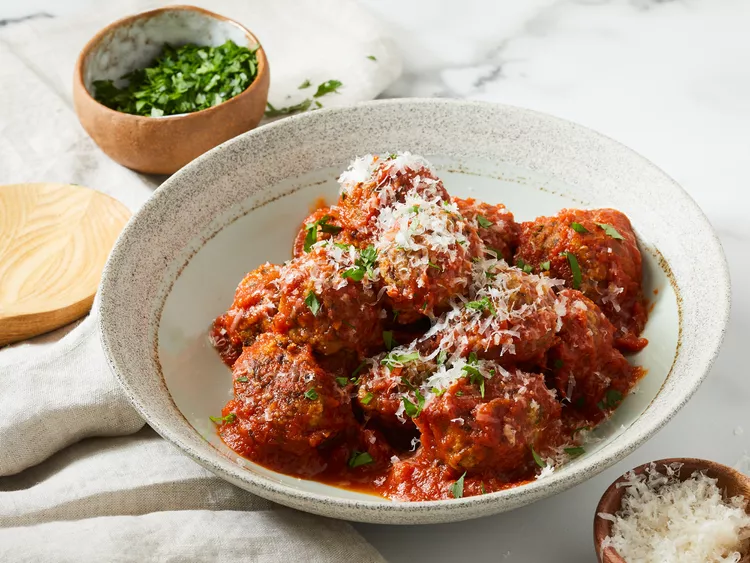

Meatless Meatballs

Description
Mushrooms, garlic and cheese included
A great addition to traditional spaghetti
Ingredients
- 1 tablespoon olive oil
- 1 pound fresh white mushrooms, finely chopped
- 1 pinch salt
- 1 tablespoon butter
- ½ cup finely chopped onion
- 4 cloves garlic, minced
- ½ cup quick-cooking oats
- 1 ounce very finely shredded Parmigiano-Reggiano cheese
- ½ cup bread crumbs
- ¼ cup chopped flat-leaf (Italian) parsley, packed
- 2 large eggs, divided
- 1 teaspoon salt
- freshly ground black pepper to taste
- 1 pinch cayenne pepper, or to taste
- 1 pinch dried oregano
- 3 cups pasta sauce
- 1 tablespoon very finely shredded Parmigiano-Reggiano cheese, or to taste
- 1 tablespoon chopped flat-leaf (Italian) parsley, or to taste
Method
- Gather and prep all ingredients.
- Heat olive oil in a skillet over medium-high heat. Add mushrooms to the hot oil, sprinkle with salt, and
cook
and stir until liquid from mushrooms has evaporated. Stir butter into mushrooms, reduce heat to medium, and
cook
and stir mushrooms until golden brown, about 5 minutes.
- Stir onion into mushrooms and cook, stirring often, until onion is translucent, 5 minutes. Remove skillet
from
heat and stir garlic into mushroom mixture until fragrant, about 1 minute. Transfer mixture to a mixing
bowl.
- Mix oats into mushroom mixture until thoroughly combined. Gently stir 1 ounce Parmigiano-Reggiano cheese
into
the mixture. Add bread crumbs, 1/4 cup parsley, and 1 egg; season with salt, black pepper, cayenne pepper,
and
oregano. Mix together with a fork until crumbly. Stir in remaining 1 egg. The mixture should hold together
when
pressed.
- Cover the bowl with plastic wrap and refrigerate at least 4 hours. For best flavor and texture, refrigerate
overnight.
- Preheat the oven to 450 degrees F (230 degrees C). Line a baking sheet with a silicone baking mat or
parchment
paper.
- Form mixture into small meatballs using a 2-tablespoon scoop. Roll meatballs lightly between your hands
until
smooth, if desired; arrange meatballs on the prepared baking sheet.
- Bake in the preheated oven until meatballs are lightly golden brown, 12 to 15 minutes.
- Bring pasta sauce to a boil in a large saucepan; reduce heat to low. Gently stir meatballs into sauce until
coated. Simmer meatballs in sauce until cooked through, 45 minutes to 1 hour. Transfer to a serving bowl and
garnish with 1 tablespoon Parmigiano-Reggiano cheese and 1 tablespoon parsley.